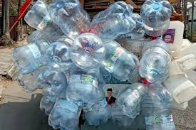

EcoLiving
Gallons Waste

Waste is the remaining or leftover material from human activities. Waste is a process of substances that cannot be reused. Waste can be i the from of solid, liquid, or gas that may cause envoronmental pollution. Examples of waste include factory waste and household waste. Waste can endanger living beings around it.
One type of waste that is often found is used water gallons. Used gallons are usually made of thick and strong plastic, so they are not easily broken or decomposed. Because of their large and heavy size, used gallons are often just stored or thrown away.
In fact, used gallons can become an environmental problem because they are difficult to decompose in nature. However, used gallons can actually be reused and turned into more useful items. One way is by decorating or recycling they into flower pots. Whit a bit of creativity, used gallons can be transformed into beautiful items whit their own aesthetic value.
In addition, processed used gallons can provide benefits for both humans and the environmental. Moreover, processed used gsllons can also be resold, providing additional economic value.